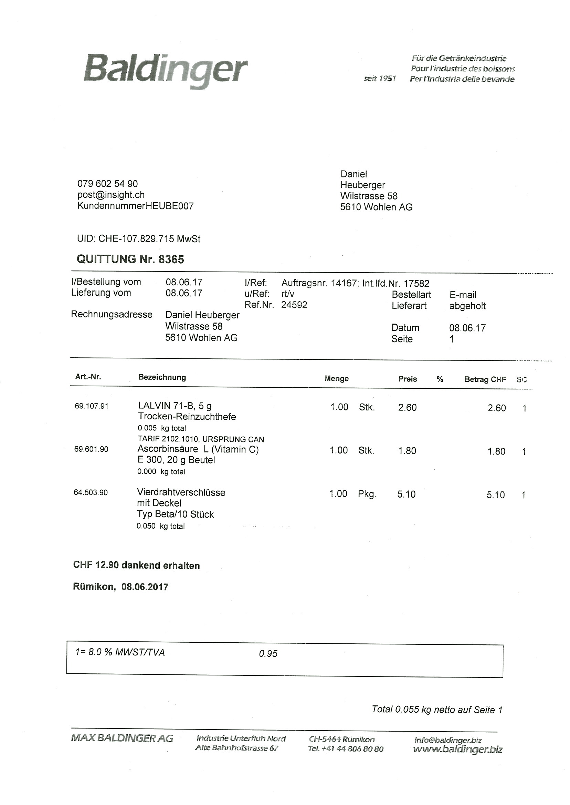
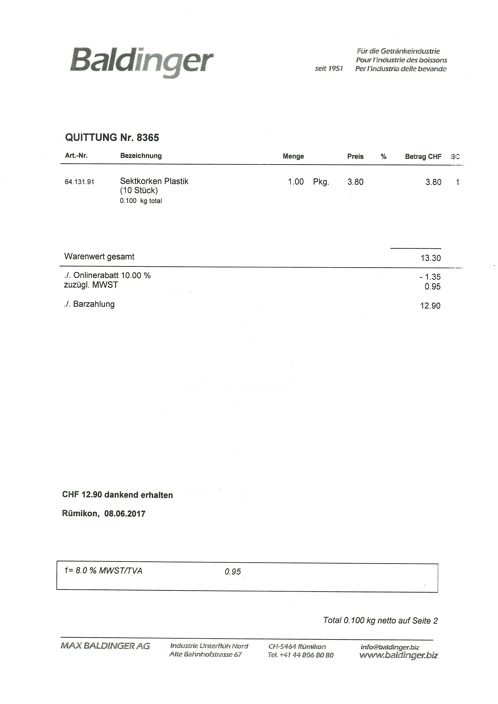

Leckeres Apfelkuchen Rezept


Zutaten:
- 250 g Mehl
- 125 g Butter
- 100 g Zucker
- 1 Ei
- 4 Äpfel
- 1 Zitrone
- 1 TL Zimt
- 1 Prise Salz
Anleitung:
- Mehl, Butter, Zucker, Ei und eine Prise Salz in eine Schüssel geben und zu einem Teig verkneten. Den Teig für 30 Minuten in den Kühlschrank stellen.
- Die Äpfel schälen, entkernen und in dünne Scheiben schneiden. Die Zitrone auspressen und den Saft über die Äpfel drücken.
- Den Teig aus dem Kühlschrank nehmen und in eine gefettete Springform geben. Den Rand hochziehen und den Boden festdrücken.
- Die Apfelscheiben auf dem Teig verteilen und mit Zimt bestreuen.
- Den Kuchen im vorgeheizten Backofen bei 180°C Ober-/Unterhitze für ca. 40 Minuten backen.
- Den fertigen Kuchen aus dem Ofen nehmen und abkühlen lassen. Vor dem Servieren mit Puderzucker bestäuben.